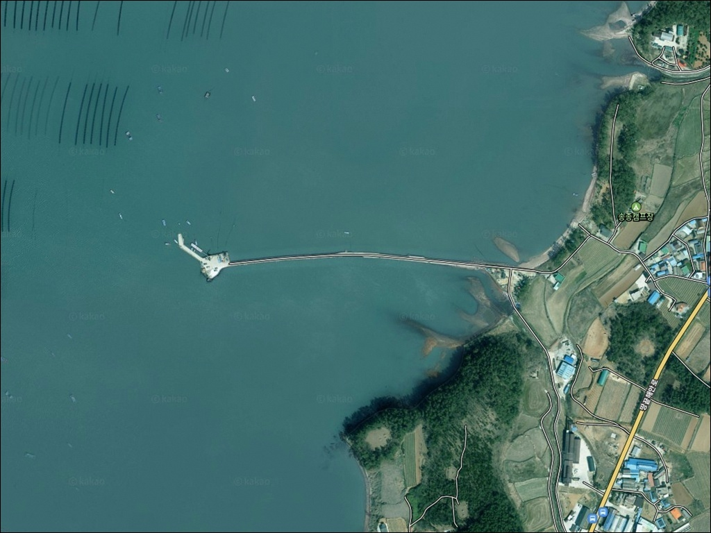
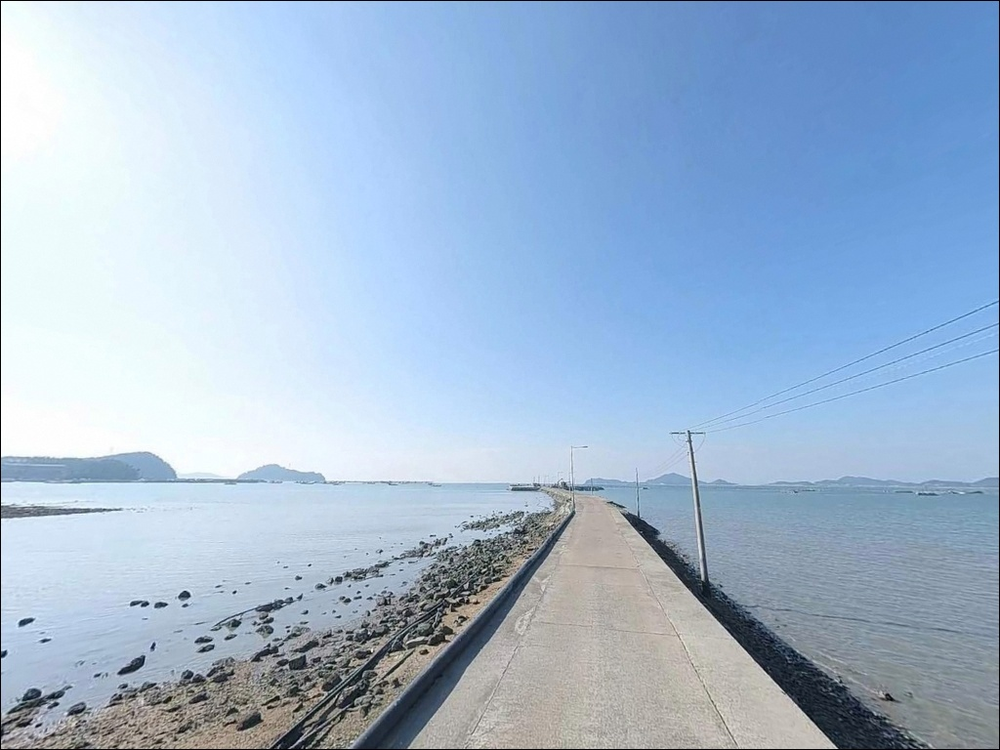
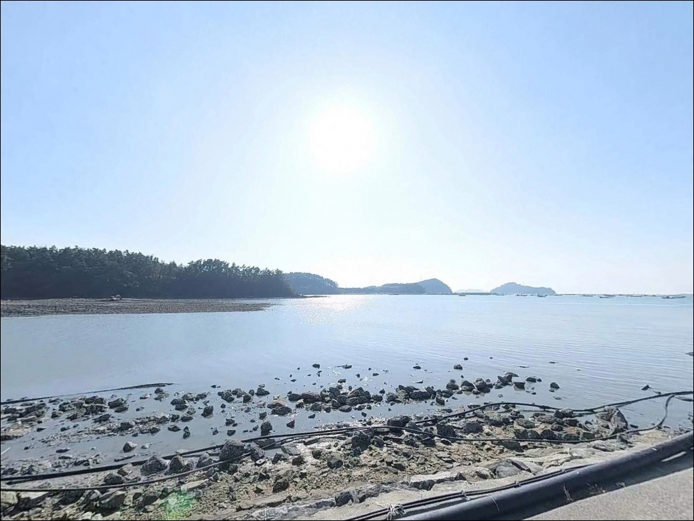
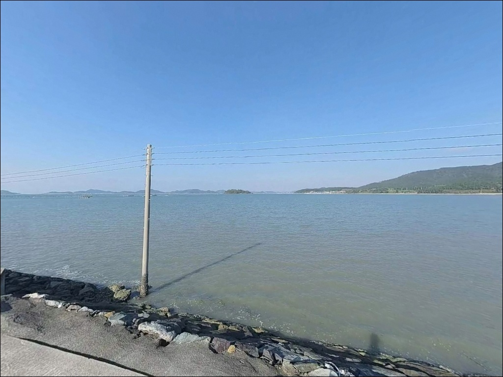
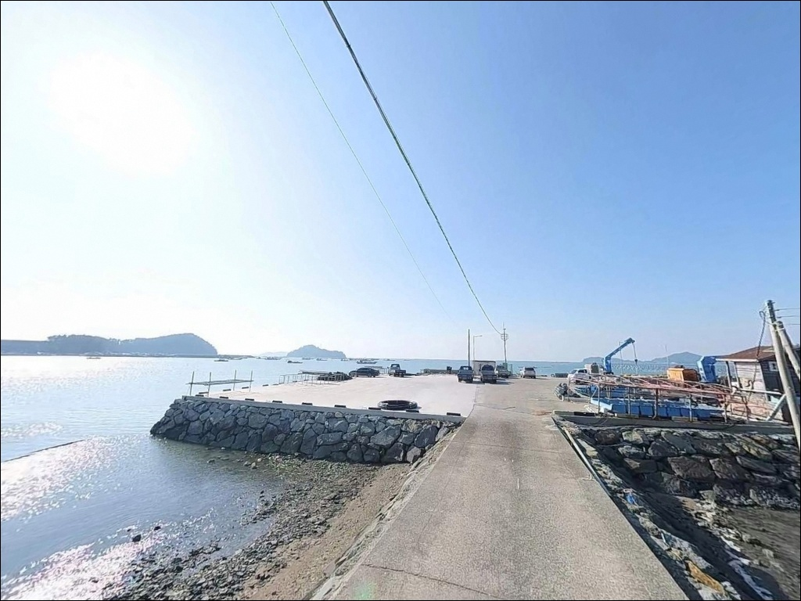
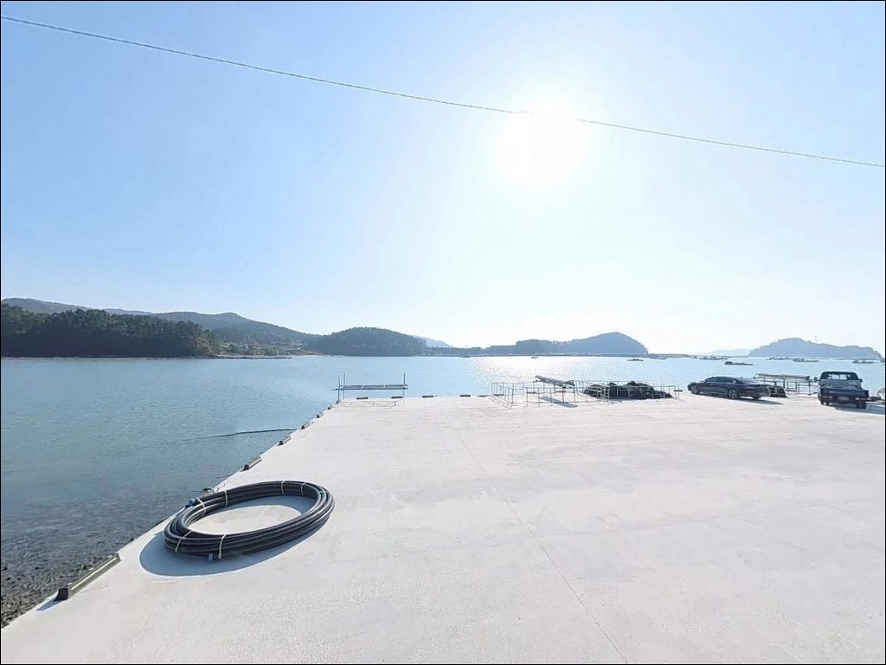
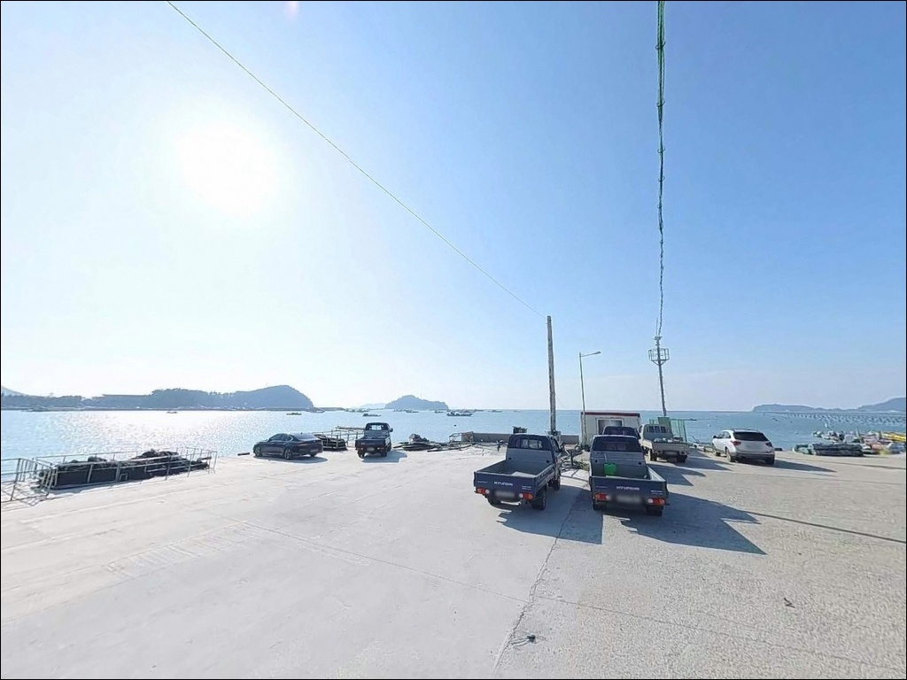
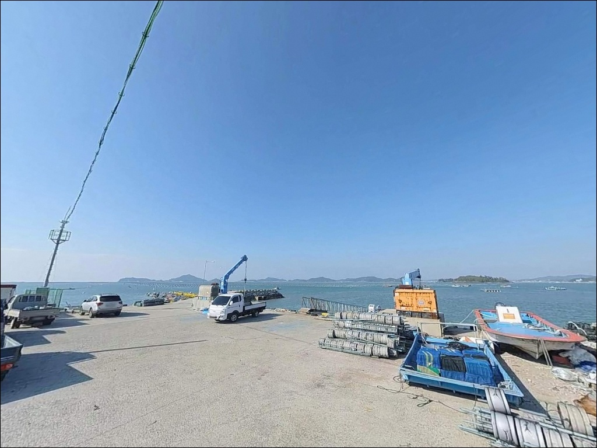
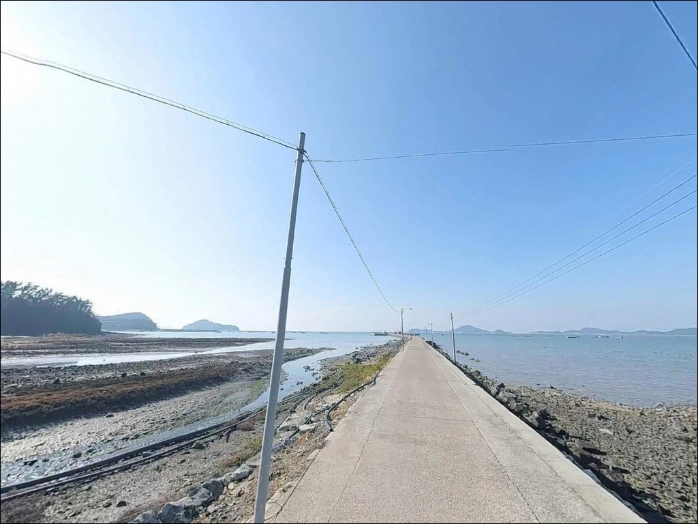

송종방파제, 전남 해남군 한적한 오션뷰를 품은 바다 차박 낚시 스팟
이 페이지에는 광고(제휴 링크 포함)가 있으며, 광고 링크를 통해 구매하면 운영자가 판매 수익 또는 수수료를 받을 수 있습니다. 포인트 사진: 카카오맵 스카이뷰·로드뷰. 이 페이지의 지도·사진 이미지는 카카오맵의 실제 서비스 이미지와 다를 수 있습니다.


포인트 안내
송종방파제
전남 해남군 송지면 송호리 502-4
조차가 큰 서남해 해역에서
물때를 맞추지 않고 방파제 자리에 앉으면
수심이 낮아진 바닥층에 봉돌이 박혀버리는 상황을
맞닥뜨립니다.
채비를 새로 달고 다시 던져도 결과는 달라지지 않으며,
진입 타이밍이 조과의 전부를 결정하는
포인트가 바로 이런 구조입니다.
전남 해남군 송지면 송호리,
해남반도 남서단 해안선에 자리한 송종방파제는
인근 소죽리 도서군과 마주보는 위치에서
만 형태의 잔잔한 수면 구조를 갖추고 있습니다.
규모가 큰 원정형 포인트보다는
조용히 들러 원투와 루어를 풀어보는
근거리 생활 낚시 포인트에 가깝습니다.
이 글은
송종방파제의 진입 여건, 차박 조건,
물때 판단 기준, 낚시 스타일별 공략 조건에 집중합니다.
조황 단정이나 특정 어종 보장은
이 글의 범위에 포함되지 않습니다.

1. 진입 동선과 포인트 접근성
송종방파제는 해남반도 남단 해안을 따라 이어지는
땅끝해안로를 통해 진입합니다.
주요 간선도로 구간은 포장 상태로
소형~중형 차량 기준 진입에 큰 어려움은 없습니다.
다만 방파제 안쪽으로 이어지는 지선 도로는
폭이 좁아지는 구간이 포함된 마을 안길 수준이라,
대형 SUV나 캠핑 장비를 갖춘 차량이라면
출발 전 위성지도 확인이 먼저입니다.
방파제 끝단까지 차량 진입을 시도하면
회차 공간이 제한적인 구조일 수 있습니다.
방파제 입구 공터나 마을 도로변에 차를 세우고
도보로 이동하는 방식이
초행 기준으로 가장 안전한 선택입니다.
주차는 방파제 시작 지점 인근 공터와
해안로 도로변 공간을 후보로 볼 수 있습니다.
어선 이동 동선과 어구 접촉을 피한 자리가 우선이며,
소규모 어촌 포구 특성상
어업 활동 구역과의 간섭에 주의가 필요합니다.

2. 차박 환경과 야간 체류 여건
송종방파제 단독으로는 차박 공간이 넉넉하지 않습니다.
소규모 포구 구조상 방파제 입구 공터 수용 대수가
1~2대 수준에 머물 가능성이 높고,
야간 조명도 방파제 끝단으로 갈수록
가로등이 부족한 환경입니다.
개인 조명 장비 없이 야간 낚시를 시도하는 것은
안전 면에서 권장하지 않습니다.
민가와 어느 정도 거리가 있어
야간 소음 민원 부담은 상대적으로 낮은 편이지만,
인근 소죽리 도서 방향에서 들어오는
해상 바람 영향이 날씨에 따라 상당할 수 있습니다.
차박 체류를 계획한다면
기상청 해양 예보에서
풍향·풍속을 당일 아침 재확인하는 것이
기본 준비입니다.
하룻밤 이상 머물거나
세면·화장실 접근이 필요한 경우라면
인근 송호해수욕장 구역이 더 안정적입니다.
낚시 위주로 짧게 들르는 방문이라면
방파제 입구 공터를 활용하는 방식이 현실적이고,
차박을 메인으로 삼기보다는
낚시 체류 보조 수준으로 접근하는 편이 맞습니다.


3. 주변 편의시설 및 인프라 현황
송종방파제 자체에는 별도의 편의시설이 없습니다.
반경 3km 이내 송호해수욕장 방향으로 이동하면
편의점과 화장실을 이용할 수 있어,
부족한 소품이나 식수가 있다면
이 동선을 출발 전 또는 도착 직후에 활용하는 방식이
효율적입니다.
반경 10km권으로 나가면
땅끝마을 방향으로 마트, 주유소,
응급 의료시설까지 이어집니다.
응급 상황이 발생할 경우 해남읍까지 거리가 상당하므로
출발 전 연료, 비상약품, 식수를
완전히 갖추고 진입하는 것이 기본입니다.
낚시 소품은 현장 근처에서 구하기 어려우므로
여분 채비는 출발 전 미리 챙겨야 합니다.

4. 물때 확인 없이 진입하면 채비 운용이 불가능한 이유
이 해역의 평균해면하는 201cm 수준으로
서남해 기준으로도 조차가 큰 편에 속합니다.
소조기(조금 전후)에는 수심이 낮아져
방파제 주변 바닥층 대부분이 얕아지고,
원투 봉돌이 펄 바닥에 박혀
채비 운용 자체가 불가능해지는 상황이 생깁니다.
조차가 큰 해역의 소형 방파제에서는
물때를 맞추지 않으면 수심이 낮아져
채비 운용 자체가 불가능해집니다.
사리 전후 들물 시간대는
조류가 살아나면서 바닥층 어종이
움직이기 시작하는 타이밍입니다.
바다타임에서 해남 송지면 기준 물때를 먼저 확인하고,
들물 2~3물 전후를 기준으로
진입 시각을 잡는 것이 이 포인트에서의
기본 전략입니다.
서남해 해역은 돌풍이 자주 발생하는 구간이 있어
기상청 해양 예보를 당일 아침에 반드시 재확인해야 합니다.
암초 성분 바닥에서는 채비 손실이 잦을 수 있으니
여분 채비는 넉넉하게 준비하는 편이
현장에서 당황하지 않는 방법입니다.
야간 낚시 시에는 헤드랜턴과 구명조끼를
반드시 갖춰야 합니다.

5. 조류 변화가 바닥층 어종 입질을 결정하는 지형 구조
송종방파제 일대 해안선은
리아스식 해안 특성이 강한 복잡한 해안선 구조로,
인근 소죽리 도서군과의 사이에서
좁은 수로와 만 형태 지형이 형성됩니다.
이 수로 구간에서는 사리 전후
3노트(kn) 이상의 조류가 발생하는 것으로 기록된 해역이라,
조류 세기가 낚시 가능 여부를 가르는
핵심 변수입니다.
방파제 내항 쪽 바닥은 펄과 모래가 섞인
연질 저질로 추정되며,
내항은 조류 영향이 약하고 수심도 얕아
유속이 거의 없는 구간이 됩니다.
외항 방향은 조류 흐름이 상대적으로 살아있어
바닥 어종이 움직이기 좋은 조건을 갖추고 있으며,
들물 초 20분이 핵심 타이밍입니다.
외항 방향 원투 자리는 조류가 살아나는
들물 시작 전후에 바닥 어종 반응이 올라오는 편입니다.
이 일대 해역은 김양식장이 발달한 구간이
포함되어 있어 어자원이 집중되는 환경입니다.
방파제 주변 암초 경계 구간은
바닥 어종의 은신처 역할을 합니다.
출조 전에 해남 송지 일대 최신 조황 검색을
먼저 해보시는 편이 좋습니다.


6. 포인트에 어울리는 낚시 스타일
이 포인트에서 가장 기본이 되는 낚시는
원투낚시입니다.
펄·모래 혼합 저질 바닥에서
노래미, 도다리류, 붕장어 등 바닥층 어종을
대상으로 멀리 채비를 보내는 방식입니다.
봉돌은 바닥 고정이 잘 되는
무거운 계열을 선택하는 편이
유속 있는 구간에서 채비 안정에 유리합니다.
루어낚시도 이 포인트 구조와 맞는 스타일입니다.
지그헤드에 그럽웜 계열을 조합해
바닥층을 천천히 끌어오는 방식으로
노래미, 볼락, 우럭을 노려볼 수 있습니다.
조류가 살아있는 들물 구간에는
미노우를 이용한 표층 탐색으로
농어를 노리는 방식도 시도해볼 수 있습니다.
계절은 봄과 가을에 노래미·볼락 활성이 높고,
여름에는 농어·우럭 패턴이 주를 이루는 편입니다.
볼락 라이트게임은 야간 입장 시 유효한 선택입니다.
방파제 주변 암초 경계 구간에서
소형 지그헤드 채비를 천천히 탐색하는 방식이
이 포인트 지형과 잘 맞습니다.
야간 조명이 부족한 환경인 만큼
헤드랜턴과 구명조끼는 필수이며,
방파제 발판 상태를 밝은 시간에 미리 파악해 두는 편이 좋습니다.

7. 대안 포인트와 플랜 B 동선
송종방파제 여건이 여의치 않거나
주차 공간 확보가 어려울 때는
같은 송지면 해안선을 따라
갈두방파제와 갈산방파제가 첫 번째 대안입니다.
동일한 해안선 특성을 공유하고 있어
어종 패턴이 유사하게 유지되며,
진입 여건을 출발 전에 위성지도로 미리 확인해두는 편이 좋습니다.
거리를 조금 더 늘리면
어란진항 방파제가 같은 해안선 기준
3km대 이내에 위치합니다.
규모가 크고 수심 2.5~5m 내외로 깊은 편이라
원투낚시 조건이 더 안정적입니다.
초들물 타이밍에 도다리·붕장어 입질 기록이
이 일대에서 확인된 해역이기도 합니다.
송종방파제를 처음 찾는다면
이 포인트를 기점으로 잡고
병행 탐색하는 동선이 효율적입니다.
차박 대안으로는
송호해수욕장 인근 구역이 현실적입니다.
화장실과 주차 인프라가 갖춰진 편이라
낚시를 마치고 하룻밤 머무는 용도로
활용 가능한 구역입니다.
오토캠핑장 운영 여부는
출발 전 해남군 또는 현장에서 확인하는 것이 필요합니다.

조류를 이해하면
송종방파제가 달라 보입니다
원투낚시나 루어낚시를 즐기는 낚시인이라면
해남 송지면 해안선의
이 조용한 포구 방파제는 충분히 탐색해볼 만한 곳입니다.
대물 원정형보다는 가볍게 들러
노래미, 도다리, 볼락을 대상으로
여러 방식을 풀어보는 스타일과 잘 맞으며,
온라인 자료가 많지 않아
직접 답사해두면 나만의 포인트로 정착시킬 수 있는 곳이기도 합니다.
다만 물때 계산 없이 진입하거나
소조기에 도착하면
채비 운용 자체가 어려운 상황을
맞닥뜨릴 수 있습니다.
물때 확인, 진입로 사전 점검, 자급 준비,
이 세 가지를 갖추고 찾아간다면
조용한 서남해 분위기 속에서
기억에 남는 출조가 될 수 있는 곳입니다.
편의시설 없는 소규모 포구 방파제이지만
물때와 조류를 잘 읽어 자리를 잡는다면,
낚시를 마치고 인근 해수욕장 구역에서
조용히 하룻밤 머무는 차박 여행으로 이어가기에도
나쁘지 않은 동선입니다.